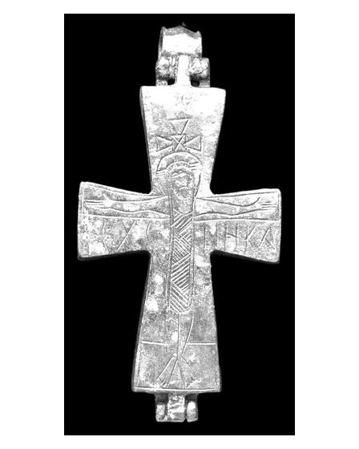
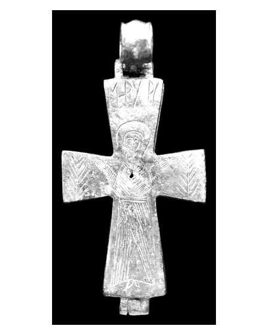

Catalog › CE-0387 · APH2017-6
Encolpion bivalv din aliaj de cupru, cat. 6, Aphrodisias
a doua jumătate a sec. X – sec. XI (951–1100) · Aphrodisias, Turcia
double-sided reliquary cross (enkolpion), altul; a doua jumătate a c. X – sec. XI (951–1100); found at Aphrodisias, Turcia.




Identificare
- Categorie
- Encolpion bivalv (relicvar)
- Material
- Altul
- Tehnică
- Gravare (incizie)
- Stare
- Întreagă
- Dimensiuni
- Î 100 × L 47 × Gr 10 mm
Iconografie
- Avers
- Răstignirea (Hristos în colobium)
- Descriere avers
- Răstignirea: Hristos bărbos, cu nimb cruciform, poartă un colobium fără mâneci, până la genunchi, decorat cu triunghiuri care se intersectează; brațele transversale ale crucii lui Hristos sunt conturate, iar capătul brațului vertical depășește nimbul; din această piesă de sus ies brațe lărgite, formând o cruce suplimentară sau poate o tabula ansata; sub brațele transversale formula Ι[ησού]Σ Χ[ριστό]Σ ΝΗΚΑ.
- Revers
- Maica Domnului Orantă
- Descriere revers
- La centru Maica Domnului orantă, cu maphorion și tunică legată la brâu, care sub brâu se desparte în două cute reprezentate prin linii verticale paralele; sub tunică se văd doi pantofi mici; chipul lung, cu puține linii stilizate, în nimb oval; la capetele brațelor transversale ramuri de palmier; sus invocația Μ[ητέ]Ρ ΧΡ[ι]Σ[τού].
- Inscripții
- Ι[ησού]Σ Χ[ριστό]Σ ΝΗΚΑ; Μ[ητέ]Ρ ΧΡ[ι]Σ[τού]
- Limba
- Greacă
Datare și atribuire
- Datare
- a doua jumătate a sec. X – sec. XI (951–1100)
- Centru
- Necunoscut
- Tipologie
- Pitarakis (2006), forma tip I, balama tip III
Descoperire
- Localitate
- Aphrodisias
- Țară
- Turcia
- Context
- Necropolă / mormânt
- Coordonate
- 37.7088° N, 28.7238° E
- Precizia locului
- Doar localitatea
Păstrare și referințe
- Nr. inventar
- 69-397
- Bibliografie
- H. Jeffery, The Archaeology of Middle Byzantine Aphrodisias, teză DPhil în arheologie clasică, University of Oxford, aprilie 2019 [Jeffery 2019], vol. 3 (Figures), Descriptive Catalogue Four: Copper Alloy Reliquary Crosses, cat. nr. 6 (paginile nu sunt numerotate în PDF; p. PDF 435), fotografie reprodusă la p. PDF 434.
- Figura
- fotografie în catalog, fără număr de figură
- Planșe
- Jeffery 2019, vol. 3, Cat. Four, p. PDF 434
- Analogii
- Pitarakis (2006), nr. 235–285; Roodenberg (2009), p. 167, fig. 14.
- Observații
- Context: Cath.69.106; crucea a fost găsită pe nivelul podelei, lângă partea de sus a coloanei vertebrale. Intactă, nedeschisă (știftul niturii e corodat în loc); nu se știe ce relicvă, dacă există, conține cavitatea. Autorul notează că invocația cu Χριστοῦ e singurul aspect neconvențional (Μητέρ Θεοῦ fiind mult mai frecvent); Pitarakis dă doar trei exemple cu varianta Χριστοῦ, toate în Asia Mică (nr. 264, 272, 284), la care se adaugă cat. 13. Tip bine atestat, produs în Asia Mică și la Constantinopol. Dimensiuni: L. 10,0 × l. 4,7 × gros. 1,0 cm. Material: „copper alloy” (aliaj de cupru) în sursă. Coordonate: ale localității (aproximative), nu date în sursă.
Citare: Corpus Encolpiorum, CE-0387, Encolpion bivalv din aliaj de cupru, cat. 6, Aphrodisias, --root/piese/APH2017-6/ (accesat 2026-10-20).